Press
Offly press kit
Offly is a free offline music and video player for iPhone, iPad, and Android. It plays MP3, FLAC, and MP4 files you already own. No streaming account. This page is the stable kit URL.

Fact sheet
- Name
- Offly
- Maker
- Karma Academy
- Price
- Free. An optional one-time Offly Premium purchase adds extras such as the parametric equalizer. Playback stays free.
- Platforms
- iPhone and iPad, iOS 18 and iPadOS 18. Android phones and tablets, Android 14
- Account
- None required to build a library or play files
- Formats
- MP3, FLAC, AAC, WAV, M4A, AIFF, CAF, OGG, MP4, MOV, M4V
- CarPlay
- Continue, Library, Playlists, Favorites
- Android Auto
- Continue and Library
- Siri
- Continue in Offly, play a playlist, play Favorites
- Transfer
- Wi-Fi from a Mac or PC browser. No cable.
- Privacy
- No Offly cloud for your library
- Contact
- github.com/KarmaAcademy/Offly
Clean screenshots
Device UI only. No headline type. JPEG, each well under 3 MB. Use these for AlternativeTo and reviews.
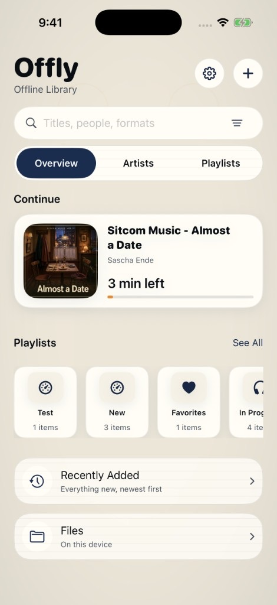
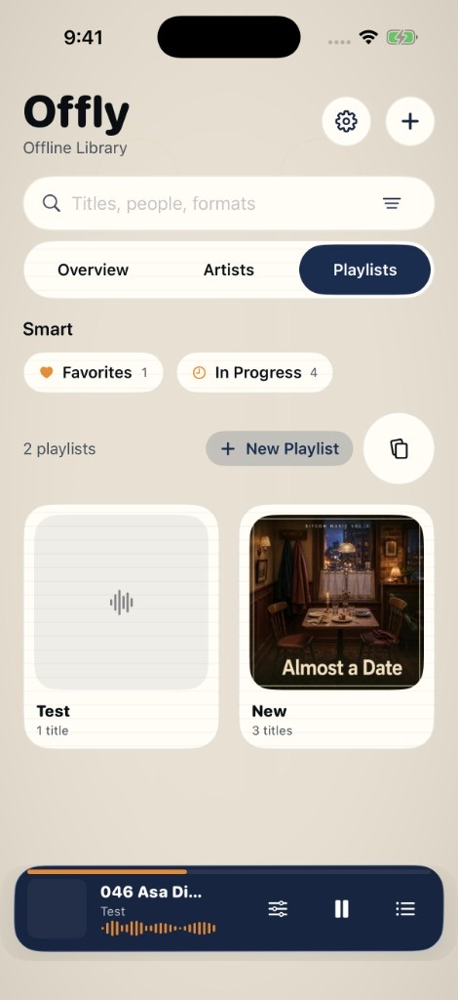
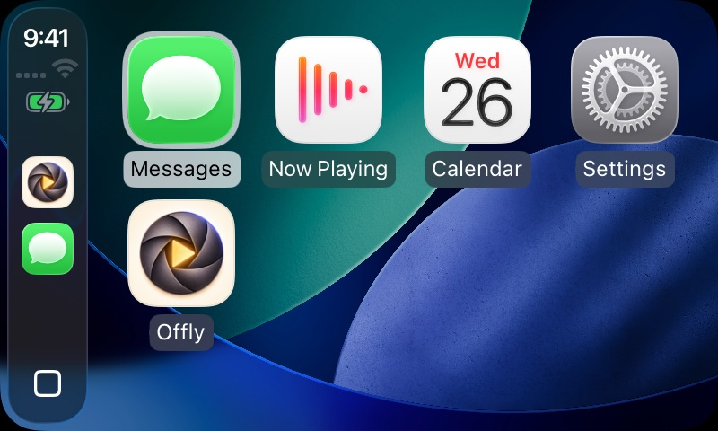
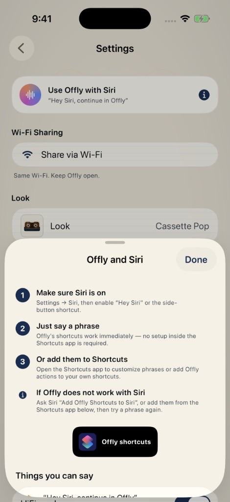
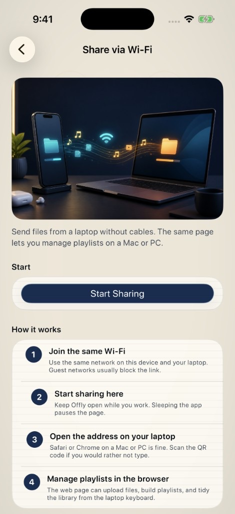
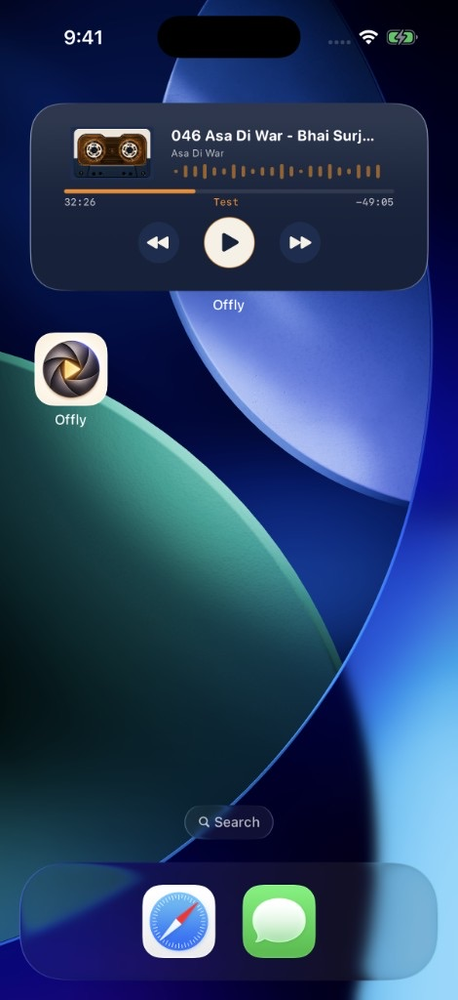
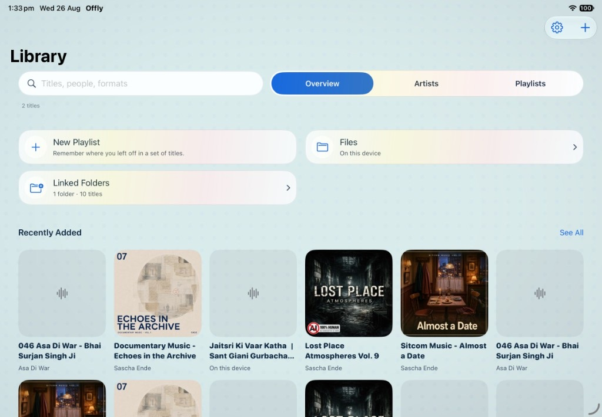
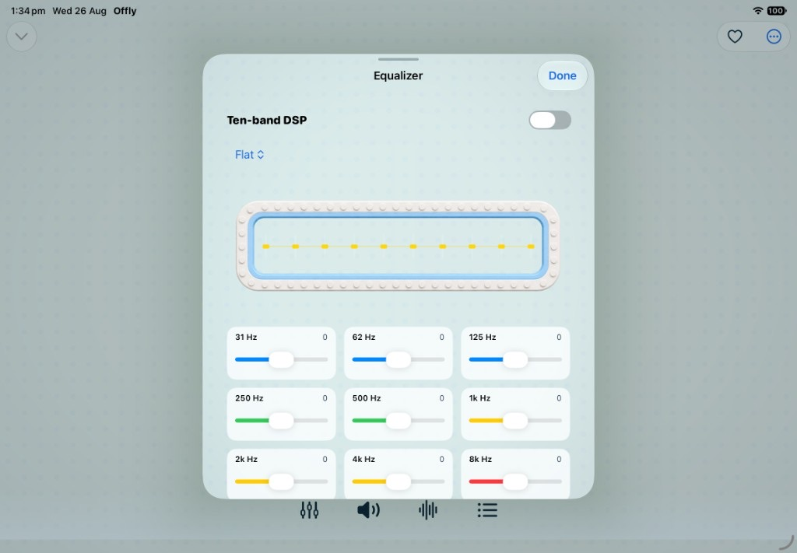
Marketing stills
Designed cards for Product Hunt, Uneed, and Peerlist. Prefer the clean shots above for reviews.
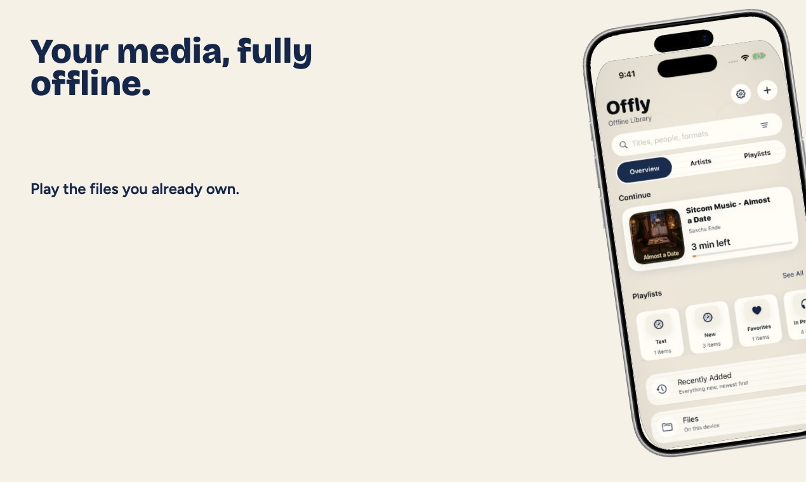
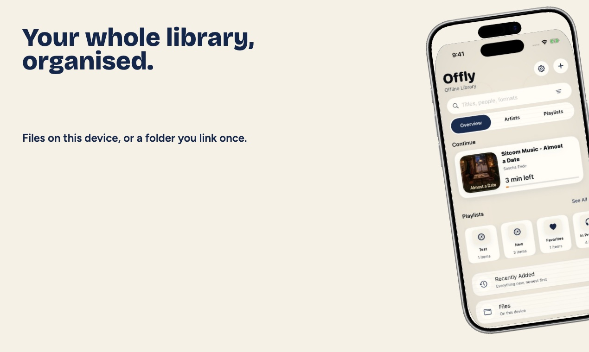
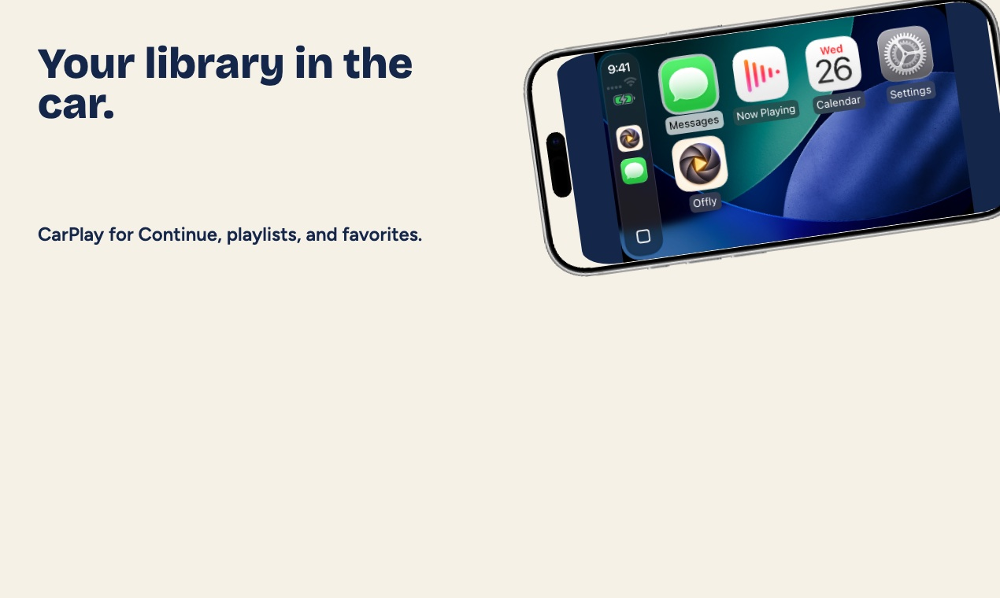
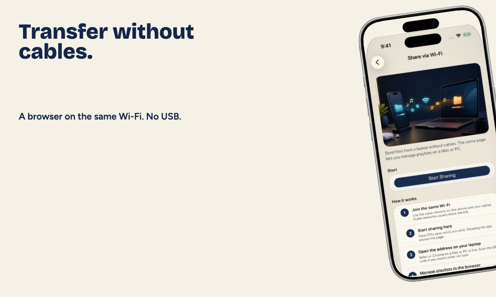
Film
45-second Product Hunt / YouTube master (1920 × 1080, H.264). After YouTube is public, paste the watch URL into listings. Download: offly-product-hunt.mp4.
Boilerplate
Offly is a free offline music and video player for iPhone, iPad, and Android from Karma Academy. It plays MP3, FLAC, and MP4 files you already own, with CarPlay, Siri, Android Auto, Google Assistant, widgets, and Wi-Fi transfer. There is no streaming account and no Offly-hosted library.